library(dplyr)
library(fawkes)
library(ggplot2)
library(sf)EleksDraw pen plotter with R
The EleksDraw pen plotter is a relatively cheap pen plotter that works like the better-known AxiDraw plotter. Unlike the AxiDraw, it comes as a kit that needs to be assembled, and the only software available is a Windows program. Since I’m using macOS and I wanted more freedom, I decided to fiddle around with it in Python, which resulted in a blog post and accompanying code. In this post, I describe how I got to get it working with ggplot2 in R.
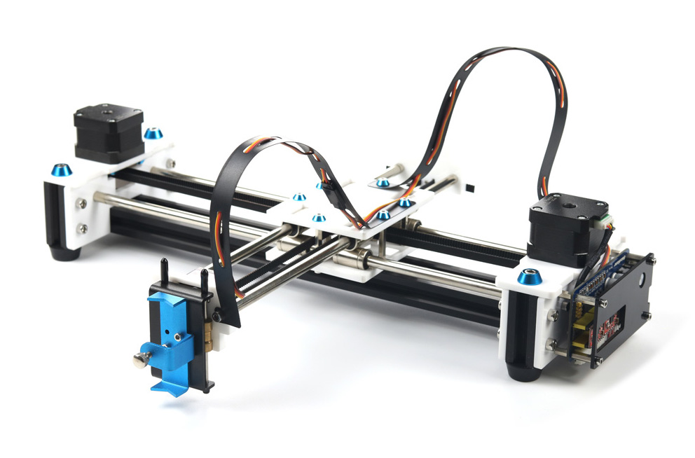
Python
My initial python code was very hacky and unstable, so I decided to take a more structured approach, now that I knew I would be able to get it working. I found a nicely structured project by Michael Fogleman that does the same for the Makeblock XY Plotter. It defines an object that holds the connection to the plotter, and defines methods that send commands to it, like move(), pen_up() and pen_down(). It can render a drawing and store it as an image before sending it to the plotter, which makes it easy to assess an image virtually before physically drawing it. I forked the project, edited the device instructions and restructured it a bit, which resulted in EleksDrawPy.
This new code is a lot easier to use and more stable than my previous attempt. It also allows for usage from R via the reticulate R interface to Python.
R
My pen plotter was collecting dust when I stumbled upon fawkes, “an R interface to the AxiDraw plotter” by Thomas Lin Pedersen, who is part of RStudio’s tidyverse team. It uses reticulate to be able to use the AxiDraw python interface from R, and defines a device which one can write ggplot2 plots to, similar to R’s built-in png() or pdf() device. How cool would it be to be able to plot ggplot2 graphs on my plotter?
It turned out to be very straightforward to port his code to use my python code. The resulting code can be found on GitHub. I kept the original code intact, but added the eleks_dev() and the eleks_manual() functions, which are the counterparts of the axi_dev() and axi_manual() functions already present. The former can be used as a device like png(), the latter for interactive mode (i.e. sending individual commands to the device). I did not create a version of the axi_svg() function (that uses the AxiDraw svg plotting capabilities), since my EleksDraw python code does not have this functionality (yet).
The fawkes::ghost_dev() device that is also present in the package, makes it easy to get a feeling of what the resulting plot will look like. It shows not only the lines that will be drawn, but also the paths the device takes while the pen is in the air.
Now, we can plot ggplot2 graphs from R right onto a piece of paper! Below are some examples. All credits go to Thomas Lin Pedersen and Michael Fogleman, whose code I merely adjusted for my specific goal.
Results
The python module can be installed with pip install -r requirements.txt (after cloning the project), and the R package with remotes::install_github('basjacobs93/fawkes'). The packages we’ll use besides the aforementioned fawkes and ggplot2 are dplyr (for data manipulation) and sf (for using spatial data).
Given a ggplot2 plot p, the plot can be previewed with the following,
gd <- ghost_dev('A6', portrait = FALSE, margins = 5, ignore_color = TRUE)
p
invisible(dev.off())
gd$preview(plot_air = TRUE)and plotted with the EleksDraw using the below.
gd <- eleks_dev('A6', portrait = FALSE, margins = 5, ignore_color = TRUE)
p
invisible(dev.off())For each of the below examples, we show the ggplot2 graph as a png, the output of the fawkes::ghost_dev() preview, and finally a picture of the plot on paper.
Facets with mtcars
The first plot is copied straight from the fawkes examples. It plots the famous mtcars dataset using facets and demonstrates the capabilities of the fawkes library.
p <- ggplot(mtcars) +
geom_point(aes(disp, mpg)) +
facet_wrap(~ gear) +
theme_bw(base_size = 6) +
theme(
plot.background = element_blank(),
panel.background = element_blank()
)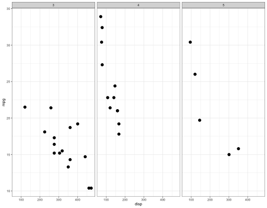
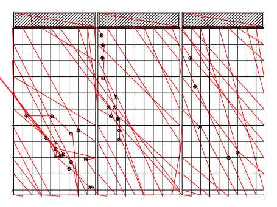
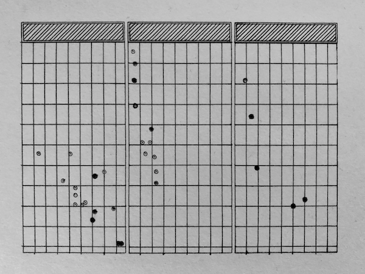
Harmonograph
The below code generates a random harmonograph, one instance of which I plotted.
f1=jitter(sample(c(2,3),1));f2=jitter(sample(c(2,3),1));f3=jitter(sample(c(2,3),1));f4=jitter(sample(c(2,3),1))
d1=runif(1,0,1e-02);d2=runif(1,0,1e-02);d3=runif(1,0,1e-02);d4=runif(1,0,1e-02)
p1=runif(1,0,pi);p2=runif(1,0,pi);p3=runif(1,0,pi);p4=runif(1,0,pi)
harmonograph <- data.frame(t = seq(0, 80*pi, 80*pi/10000)) %>%
transmute(
x = exp(-d1*t)*sin(t*f1+p1) + exp(-d2*t)*sin(t*f2+p2),
y = exp(-d3*t)*sin(t*f3+p3) + exp(-d4*t)*sin(t*f4+p4)
)
p <- harmonograph %>%
ggplot(aes(x, y)) +
geom_path() +
theme_bw(base_size = 6) +
theme_void()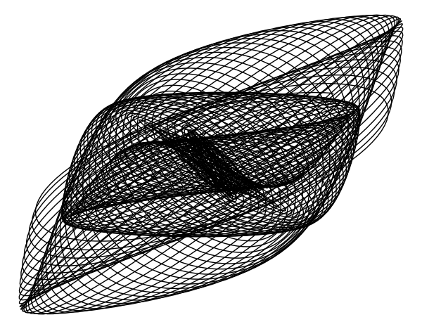
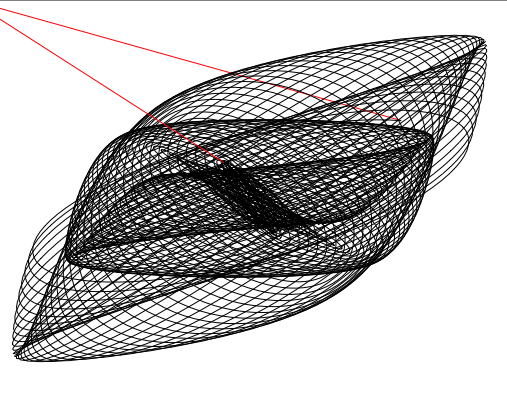
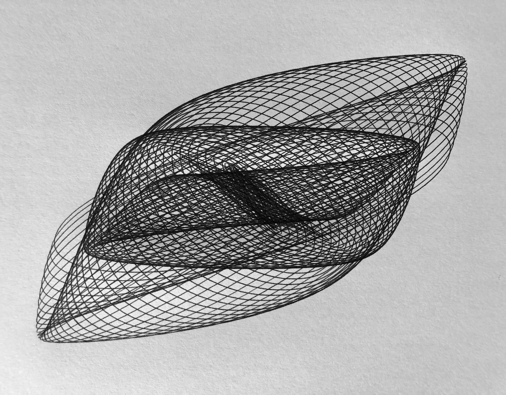
Georg Nees - Schotter
The below generates falling squares like Schotter, by generative art pioneer Georg Nees. It can be seen that there was some slippage at the belt which resulted in incomplete squares. After this plot I tightened the belt, which made the subsequent plots a lot more accurate.
n_cols <- 12
n_rows <- 22
p <- expand_grid(col = 0:(n_cols-1),
row = 0:(n_rows-1),
tibble(x = c(-0.5, 0.5, 0.5, -0.5),
y = c( 0.5, 0.5, -0.5, -0.5))) %>%
group_by(col, row) %>%
mutate(angle = rnorm(1, sd = row/60),
xn = x*cos(angle) - y*sin(angle),
y = x*sin(angle) + y*cos(angle),
x = xn) %>%
select(-xn) %>%
mutate(x = x + 1 + col,
y = y + 1 - row,
x = x + rnorm(1)*row/80, # jitter
y = y + rnorm(1)*row/60) %>%
mutate(xend = lag(x, default = last(x)),
yend = lag(y, default = last(y))) %>%
ungroup() %>%
ggplot(aes(x = x, y = y, xend = xend, yend = yend)) +
geom_segment() +
coord_fixed() +
theme_void()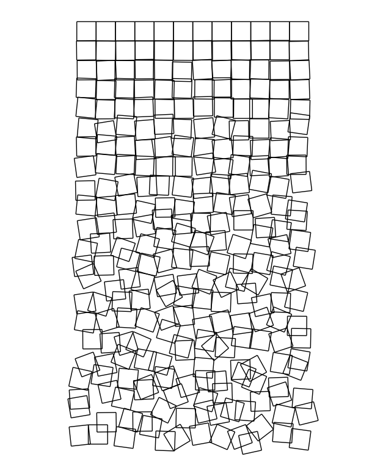
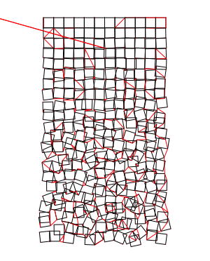
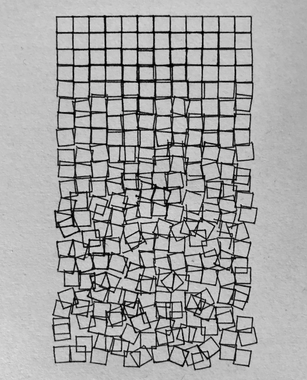
Provinces of The Netherlands
We can use the excellent sf package to load and plot spatial data with ggplot2, like a map of the province boundaries of the Netherlands. Below, we load provinces data from CBS with sf::st_read(), simplify it to decrease the complexity of the plot, and plot it with ggplot2::geom_sf().
provinces <- st_read("https://geodata.nationaalgeoregister.nl/bestuurlijkegrenzen/wfs?request=GetFeature&service=WFS&version=1.1.0&typeName=bestuurlijkegrenzen:provincies")
p <- provinces %>%
st_transform(54032) %>% # Azimuthal equidistant
st_simplify(dTolerance = 400) %>% # simplify
st_transform(4326) %>% # WGS84
ggplot() +
geom_sf(fill = NA) +
theme_void()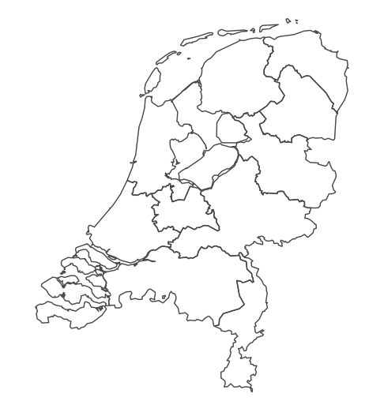
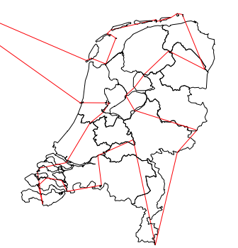
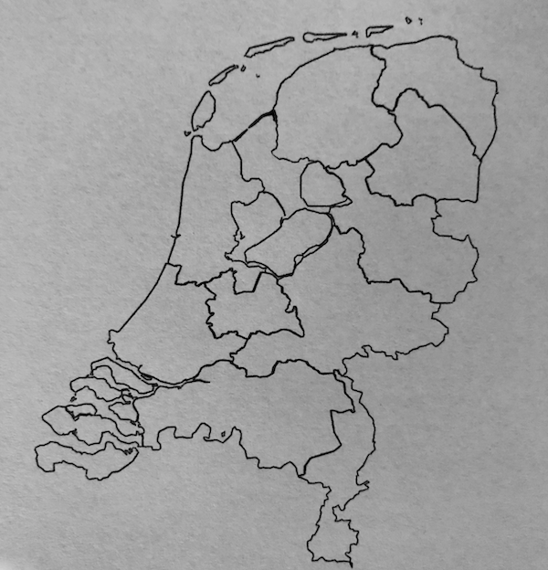